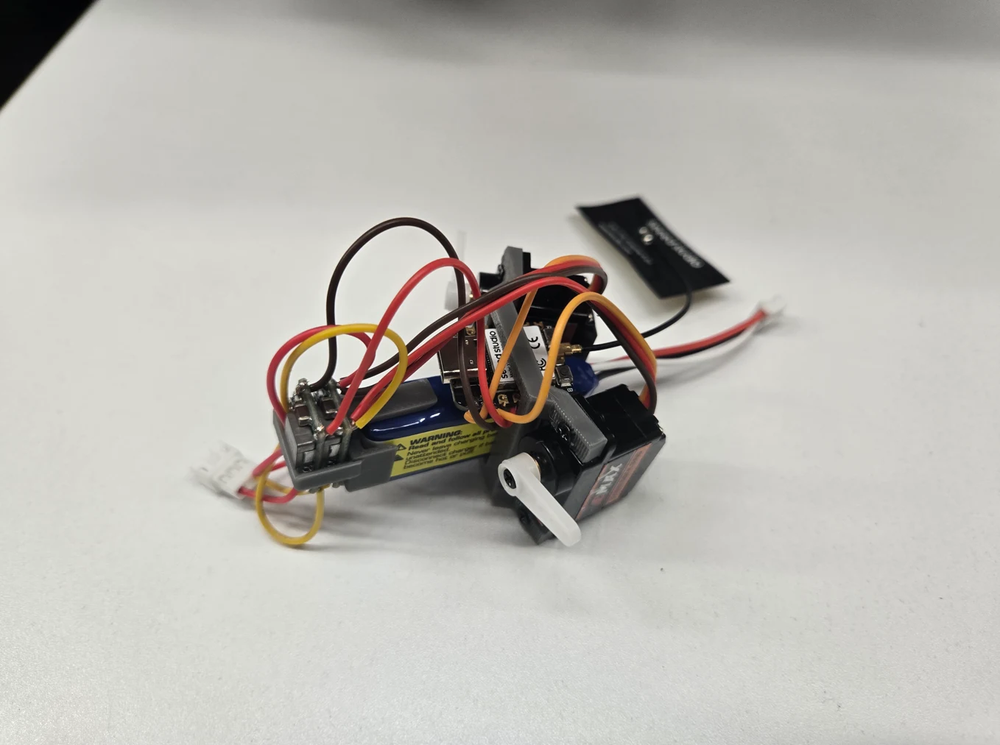
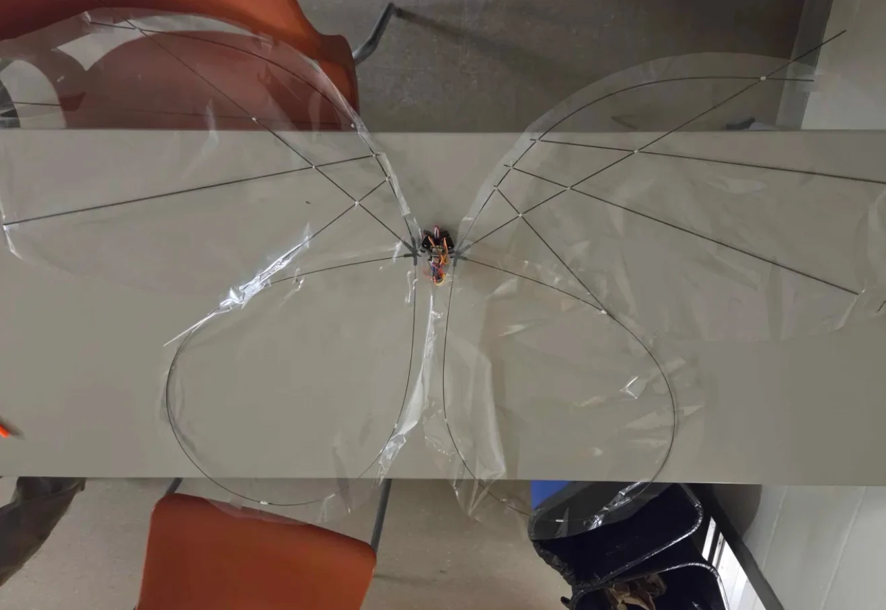

We built a remote-controlled butterfly to explore how a pair of small motors could move wings much larger than the body that carries them.
The electronics
We mounted an ESP32, a battery, and two high-speed servos in a 3D-printed frame. The ESP32 received commands from the remote and controlled the angle of each servo arm. Those arms would eventually drive the wings.

Building and testing the wings
We bent carbon-fiber rods to outline the wings and added rods across each wing as ribs. We then stretched a thin plastic membrane across each frame to give the wing its broad surface while keeping it light.
The assembled butterfly
With the wings attached on either side of the frame, each servo arm moved a wing at its root. As the arms reversed direction, the flexible outer edges followed, creating a flapping motion across the full span.

The butterfly in action
We tested the completed prototype with the wings, servos, and remote control working together.